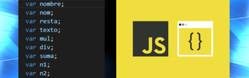
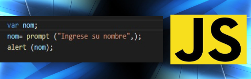
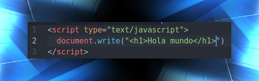
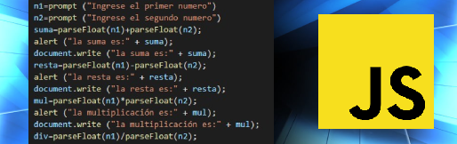
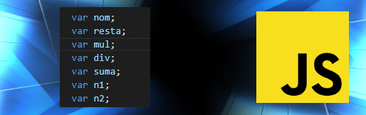
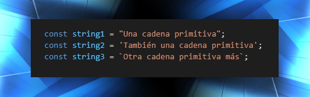
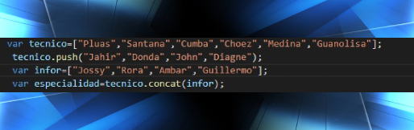

PASOS PARA CREAR UN ARCHIVO EN JAVASCRIPT
Crear un archivos JavaScript
Se crea un archivo con esa extensión “.js”

Una vez creado nuestro archivo lo debemos adjuntar a nuestro editor de código

Comprobamos que se abra la parte de código en JavaScript

Una vez creado nuestro archivo lo debemos adjuntar a nuestro editor de código
Comprobamos que se abra la parte de código en JavaScript
ETIQUETA alert();
La instrucción alert() es una de las utilidades que incluye JavaScript y permite mostrar un
mensaje en la pantalla del usuario.
Si se visualiza la página web de este primer script en cualquier navegador


VAR
Var se utiliza para declarar una variable y adicionalmente se puede inicializar el valor de esta variable.
Por ejemplo: var i = 0 .
Podemos decir que: Las variables declaradas con var son procesadas antes de la ejecución del código.

PROMPT
El método prompt() es una función definida dentro del objeto Window que permite mostrar un
diálogo con mensaje opcional, que solicita al usuario que introduzca un texto. Esta función puede recibir 2 parámetros:
Parámetro 1 = Mensaje: es una cadena de texto que se mostrará al usuario.

ssssssssssssssssssssssss
DOCUMENT.WRITE
El método prompt() es una función definida dentro del objeto Window que permite mostrar un
diálogo con mensaje opcional, que solicita al usuario que introduzca un texto.

PARSEINT
La función parseInt comprueba el primer argumento, una cadena, e intenta devolver un entero de la base especificada.
Por ejemplo, una base de 10 indica una conversión a número decimal, 8 octal, 16 hexadecimal, y así sucesivamente

VARIABLES
NUMÉRICOS
Las variables numéricas, que son aquellas que representan números y con ellas se pueden realizar operaciones aritméticas.
Por ejemplo, número_alumnos puede representar al número de alumnos que hay en un clase o peso puede representar los
quilos que pesa una persona

CADENA DE CARACTERES "STRING"
Las cadenas son útiles para almacenar datos que se pueden representar en forma de texto. Algunas de las operaciones
más utilizadas en cadenas son verificar su length, para construirlas y concatenarlas usando operadores de cadena + y +=,
verificando la existencia o ubicación de subcadenas con indexOf() o extraer subcadenas con el método substring().

ARREGLOS
Los arreglos son objetos similares a una lista cuyo prototipo proporciona métodos para efectuar operaciones de recorrido
y de mutación. Tanto la longitud como el tipo de los elementos de un arreglos son variables. Dado que la longitud de un arreglo
puede cambiar en cualquier momento, y los datos se pueden almacenar en ubicaciones no contiguas, no hay garantía de que los arreglo
de JavaScript sean densos
